Arranque de la Maquina Virtual de Linux
Abriremos Virtual Box y arracaremos la maquina virtual de Linux anteriormente creada, dandole doble clic.
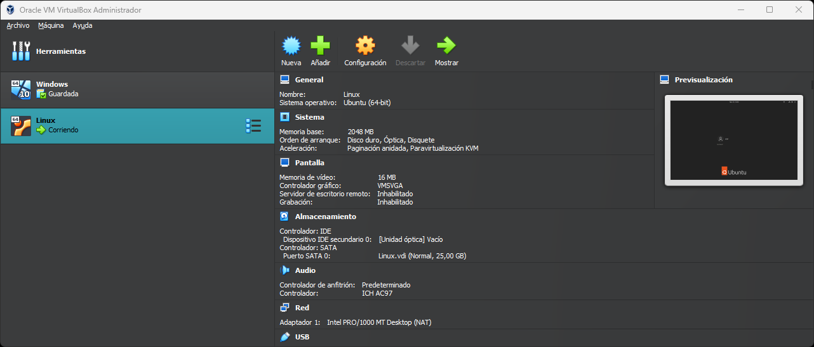Abriremos Virtual Box y arracaremos la maquina virtual de Linux anteriormente creada, dandole doble clic.
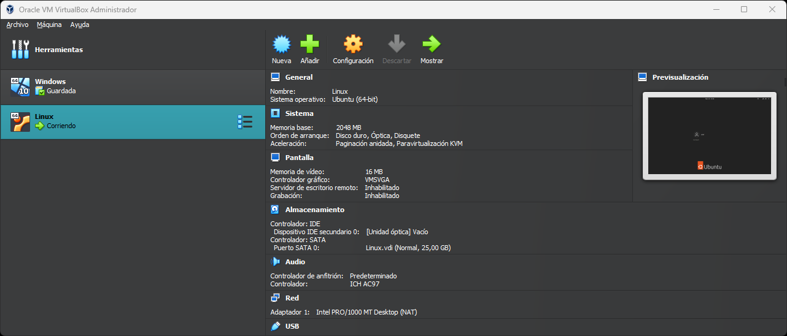Iniciaremos sesion con las credenciadas que asociamos anteriormente.
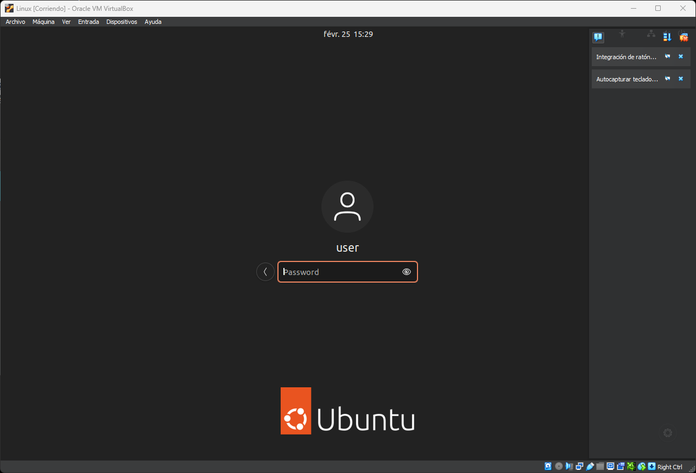Una vez dentro encontraremos una serie de programas en la barra lateral, clicaremos sobre la bolsa naraja llamado Ubuntu Software. Una vez abierto clicaremos arriba a la derecha, sobre el apartado Updates.Clicaremos sobre el boton verde de Update All, para descargar las actualizaciones.
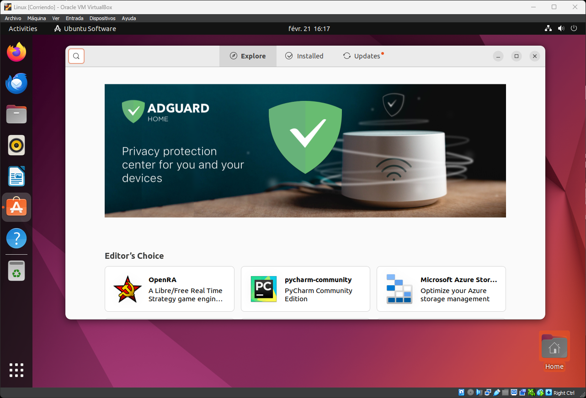Tendremos un problema a la hora de abrir la terminal por defecto ya que nos encontramos en una Maquina Virtual. La solucion sera buscar y descargar una nueva terminal, en nuestro caso usaremos Terminator. En el buscador pondremos su nombre y la descargaremos clicando en el boton verde install. Una vez que se haya instalado podremos cerrar la ventana de Ubuntu Software.
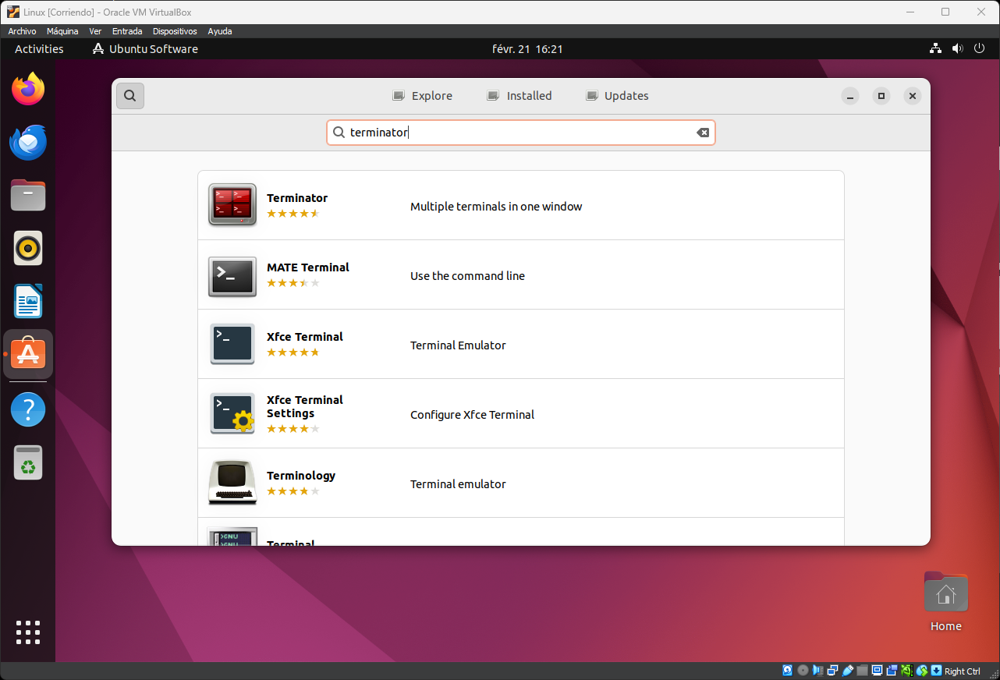Abriremos terminator presionando la tecla de windows y buscando entre las aplicaciones instaladas, una vez abierto escribiremos los siguientes comandos.
su //cambiamos a root, sera necesario introducir la contraseña
apt upgrade //en caso de que nos pregunte siempre escribiremos s o y
apt upgrade //volveremos a comprobar las actualizaciones
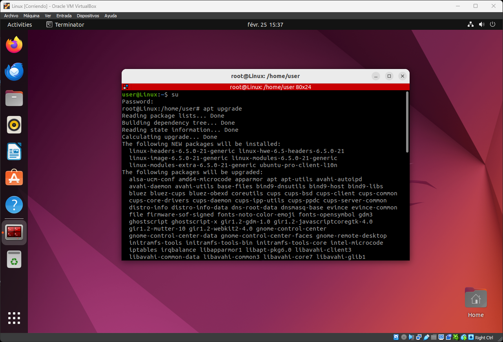
Con los siguientes comandos instalaremos samba y agregaremos un nuevo usuario llamado winuser. Al crear este nuevo usuario nos pedira crear una nueva contraseña recomiendo que para evitar equivocaciones utilicemos la misma que hemos usado al crear la maquina virtual de linux en nuestro caso 0123456789. Despues de esto nos pedira que rellenemos diferentes campos, en mi caso no pondre nada, podeis rellenarlo como convengais.
apt install samba //Para instalar samba
adduser winuser//Agregar nuevo usuario

Nuestro siguiente objetivo sera logearnos como winuser y dentro crearemos una carpeta llamada compartida a la que le daremos todos los permisos con chmod 777.
su winuser //iniciar como winuser
cd .. //retroceder de la carpeta inicial
cd winuser //adcederemos a la carpeta del usuario
mkdir compartida //crear la nueva carpeta
chmod 777 compartida/ //Darle permisos a la carpeta

Utilizaremos el editor nano que viene por defecto en linux para configurar la Carpeta compartida. Despues de ejecutar el comando, se nos abrira el archivo dentro de la terminal. Bajaremos abajo al final del archivo y pulsando la tecla insert de nuestro teclado para poder escribir en el archivo el siguiente contenido.
sudo nano /etc/samba/smb.conf //Editar archivo con Nano
[Compartida] //contenido dentro archivo
path = /home/winuser/compartida
browseable = yes
read only = no
valid users = winuser
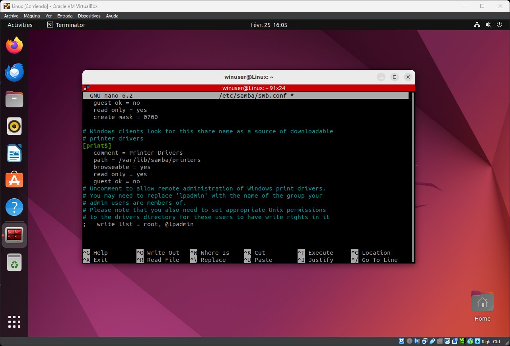
El archivo debe quedar de la siente manera. Pulsando control + O guardaremos el archivo y pulsando control + X saldremos de la edicion del archivo.
Una vez que hayamos salido de la edicion del archivo y nos encontremos de nuevo en la terminal escribiremos el siguiente comando para agregar la cuenta de winuser a samba
smbpasswd -a winuser //agregar a Samba
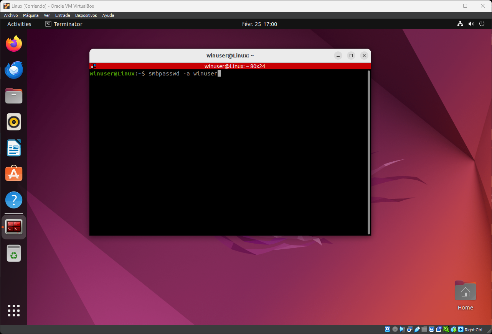
Dentro la carpeta compartida, como winuser crearemos un archivo.
su winuser //entrar como winuser
cd ..
cd winuser/compartida/
touch archivo-linux
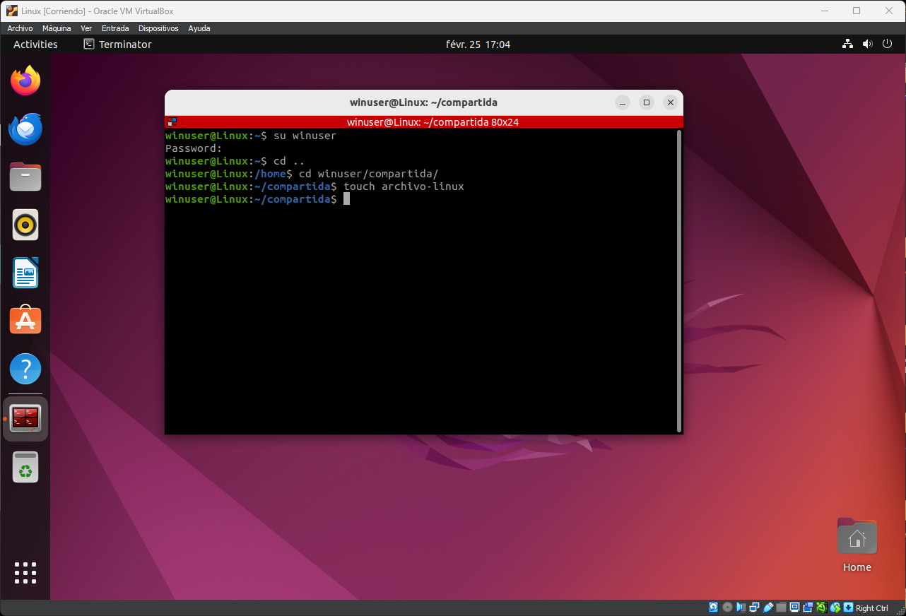
Resetearemos los servicios de Samba desde root, para asegurarnos de que todos los cambios que hemos creado se an aplicado correctamente.
su //entrar como root
systemctl restart smbd.service //resetear samba
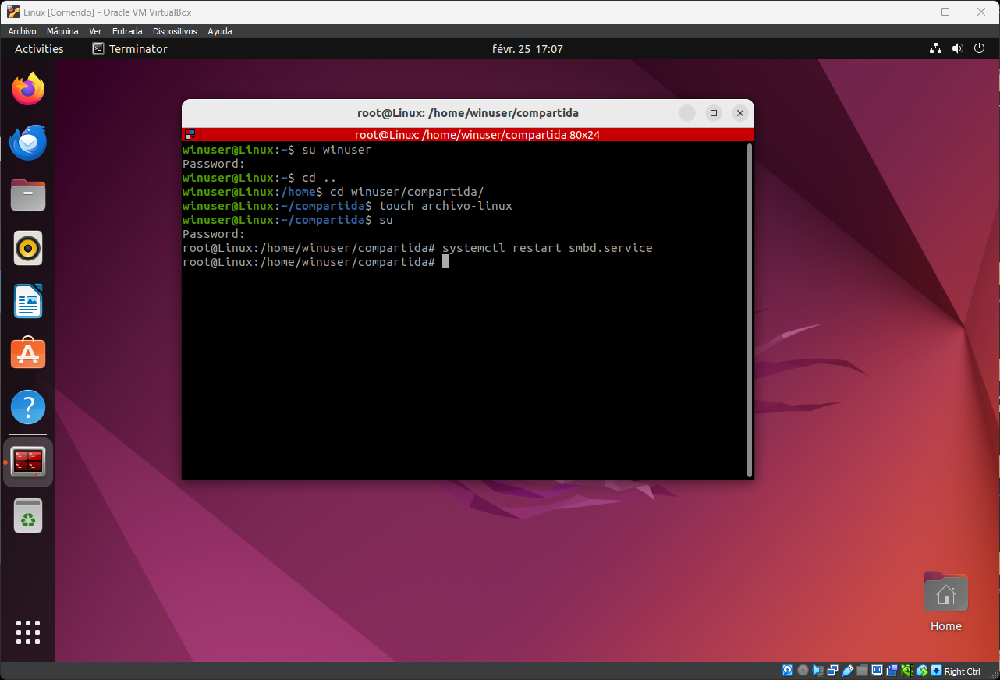
Tomaremos la segunda Ip que nos aparezca para comprobar que los sistemas se comunican entre si. En mi caso la ip es 10.0.2.15, os puede salir una diferente. Es importante recordar esta ip para comprobar que hay conexion.
ip a //Mostrar direccion ip
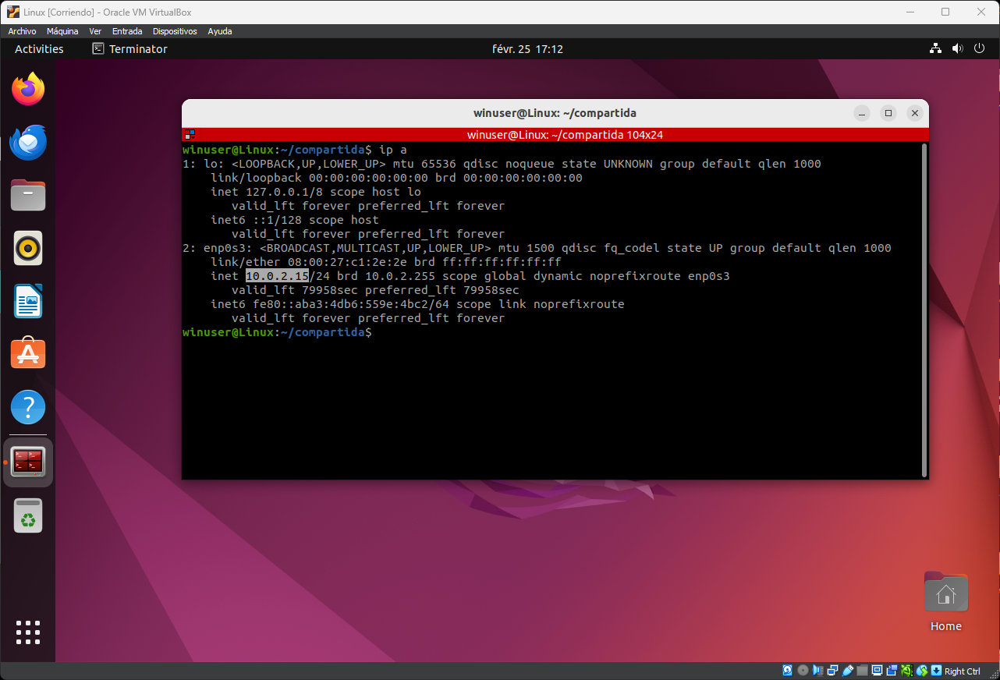